FoodLuck MEO 操作説明書 07
クチコミ返信
Googleに投稿されたクチコミを確認し、店舗の印象を良くする返信を続けるための現場運用マニュアル
| この資料の目的 クチコミ返信は、投稿してくれたお客様だけでなく、これから来店するお客様にも読まれます。FoodLuck MEOでは、未返信の確認、1件ずつの返信、テンプレート、AI返信、一括返信、自動返信、通知、削除申請の確認まで行えます。本資料では、FAQの下層記事の内容を飲食店の現場で使う順番に並べ替えています。 |
|---|
1. クチコミ返信でできること
クチコミ管理では、Googleビジネスプロフィールに投稿されたクチコミを確認し、返信済み・未返信を切り替えて管理できます。日々の運用では、まず未返信を確認し、返信が必要なクチコミから順番に対応します。
| 機能 | 使う場面 | 店舗側で見ること | 注意点 |
|---|---|---|---|
| クチコミ管理 | 未返信、返信済み、全件を確認する | 星、コメント、投稿日、返信状態、感情分析 | 最新反映には時間差が出る |
| 1件ずつ返信 | 通常の返信対応 | 青いコメントを開いて返信する | 返信文は外部に表示される |
| テンプレート | よく使う返信文を呼び出す | 来店お礼、星のみ、低評価など | そのまま使わず内容を調整する |
| AI返信 | 返信文の下書きを作る | 星数やコメントを踏まえた案 | 事実と違う内容がないか必ず確認する |
| 一括返信 | 未返信が多い時にExcelでまとめる | 返信文の列に入力して取り込む | 登録後は一括で反映される |
| 自動返信 | 条件に合う新着クチコミへ自動返信する | 星数、コメント有無、感情など | 設定後の新着クチコミが対象 |
管理画面: クチコミ管理の全体像
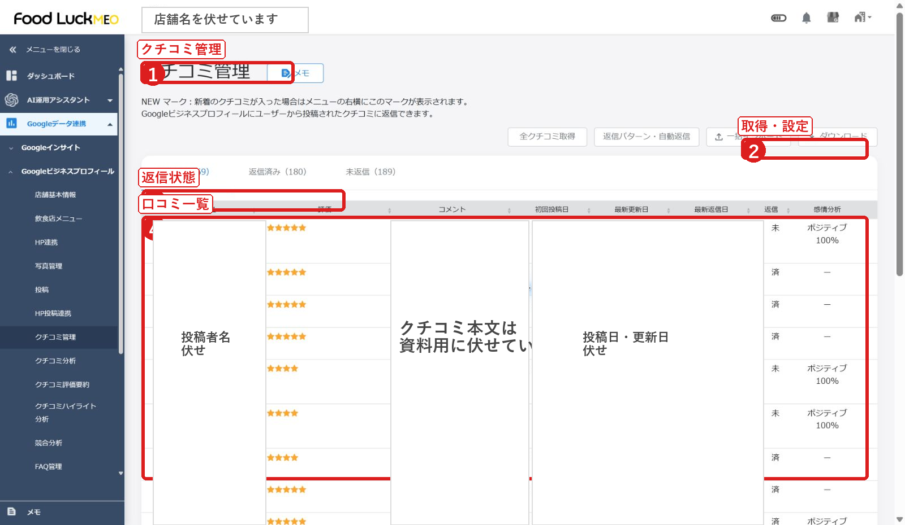
- 左メニューのGoogleデータ連携、Googleビジネスプロフィール、クチコミ管理を開きます。
- 返信状態タブで、すべて、返信済み、未返信を切り替えます。
- 全クチコミ取得、返信パターン・自動返信、一括返信、ダウンロードの位置を確認します。
- 配布用資料のため、店舗名、投稿者名、クチコミ本文、日時は伏せています。
FAQ画面: クチコミ管理の基本操作
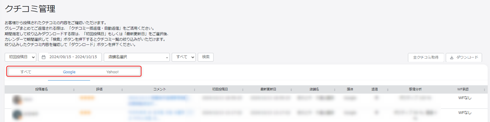
- FAQでは、クチコミ管理画面から期間、店舗、返信状態などを指定して一覧を表示する流れが案内されています。
- GoogleとYahoo!を連携している場合は、媒体の切り替えも確認します。
2. 毎日の確認手順
店舗でまず行うことは、新しいクチコミと未返信の確認です。クチコミは来店前のお客様が見ているため、できるだけ早く、丁寧に、店舗の姿勢が伝わる返信を行います。
- FoodLuck MEOにログインし、対象店舗を開きます。
- 左メニューからGoogleデータ連携、Googleビジネスプロフィール、クチコミ管理を開きます。
- 返信状態を未返信に切り替えます。グループ画面では期間、店舗、媒体も指定します。
- 新しい順に確認し、直近3ヶ月以内のクチコミを優先します。
- コメント付きの低評価、コメント付きの高評価、星のみのクチコミの順に対応します。
- 一覧に最新のクチコミが見当たらない場合は、反映タイミングを確認し、必要に応じて全クチコミ取得を使います。
| 優先順位の考え方 FAQでは、すべてのクチコミへ返信することが望ましいとされています。まずは直近90日以内のクチコミを優先します。最近のクチコミは投稿者へ通知が届きやすく、閲覧しているお客様への印象にもつながります。次に、コメントなしの古いクチコミや低評価の古いクチコミも少しずつ対応します。 |
|---|
FAQ画像: 返信状態と一覧の確認
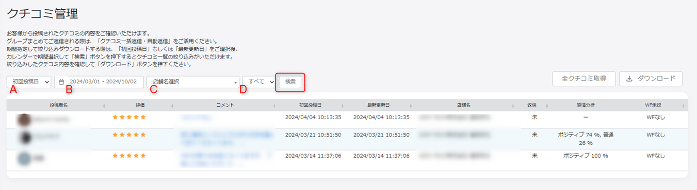
- 一覧では、投稿者名、星数、コメント、投稿日、返信状態を確認します。
- 星の数で画面上ソートはできないため、星別に整理したい場合はExcelでダウンロードして並べ替えます。
3. 1件ずつ返信する
通常の運用では、クチコミ一覧から1件ずつ開いて返信します。返信内容はGoogle上に表示されるため、保存前に文章、事実、表現を確認してください。
- クチコミ一覧で、返信したいクチコミの青いコメント部分をクリックします。
- 個別の返信画面が開いたら、内容と星数を確認します。
- 返信欄に文章を入力します。テンプレートやAI返信アシスタントを使う場合も、必ず店舗の言葉に直します。
- 返信内容に個人名、電話番号、URL、事実と違う表現が入っていないか確認します。
- 問題がなければ登録します。登録後、Google側に反映されるまで時間がかかる場合があります。
FAQ画像: 個別クチコミを開いて返信する
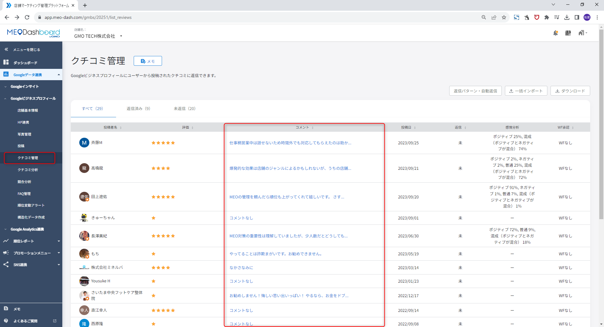
- 一覧の青いコメントをクリックすると返信画面へ進みます。
- グループ画面から開いた場合は個店ページへ移動するため、返信後はブラウザの戻るでグループ画面に戻ります。
FAQ画像: 返信欄への入力

- 返信欄へ本文を入力します。
- 保存・登録後は外部に表示されるため、公開前の最終確認として扱います。
| 一度返信した内容を編集したい時 返信済みのクチコミを開き、返信欄の文章を修正して再登録します。Google側で直接削除や編集を行うと、FoodLuck MEO上の表示とずれる場合があるため、できるだけFoodLuck MEO上で管理します。 |
|---|
4. 返信文の作り方と注意点
クチコミ返信は、目の前のお客様への返事であると同時に、未来のお客様への接客でもあります。丁寧で具体的な言葉を使い、来店のお礼、内容への反応、改善や再来店への一言を入れます。
| 場面 | 返信の考え方 | 避けること |
|---|---|---|
| 高評価 | 来店のお礼と、褒めてもらった内容への具体的な反応を書く | 同じ定型文を何度も使う |
| 星のみ | 評価へのお礼と、また利用してほしい一言を書く | 無理に長く書きすぎる |
| 低評価 | まず謝意と受け止めを示し、共有・改善する姿勢を書く | 反論、言い訳、感情的な表現 |
| 悪質と思われる内容 | 画面上で削除申請を検討する | 公開返信で強く言い返す |
| 必ず避ける表現 お客様のフルネーム、スタッフ個人名、電話番号、URLは返信文に入れないようにします。予約や問い合わせへ誘導したい場合は、Googleビジネスプロフィール上の予約ボタン、電話ボタン、Webサイトボタンを案内します。検索対策のために同じキーワードを不自然に詰め込むことも避けます。 |
|---|
| 低評価への返信 低評価には、謝罪、共感、店内共有、改善の姿勢、来店への感謝を入れます。相手を言い負かす文章ではなく、第三者が読んだ時に『この店は誠実に対応している』と感じられる文章にします。 |
|---|
5. テンプレートとAI返信を使う
返信文を毎回ゼロから作るのが大変な時は、返信テンプレートやAI返信アシスタントを使います。ただし、下書きはそのまま公開せず、店舗の実態や接客の言葉に合わせて修正します。
FAQ画像: 個店の返信テンプレート設定
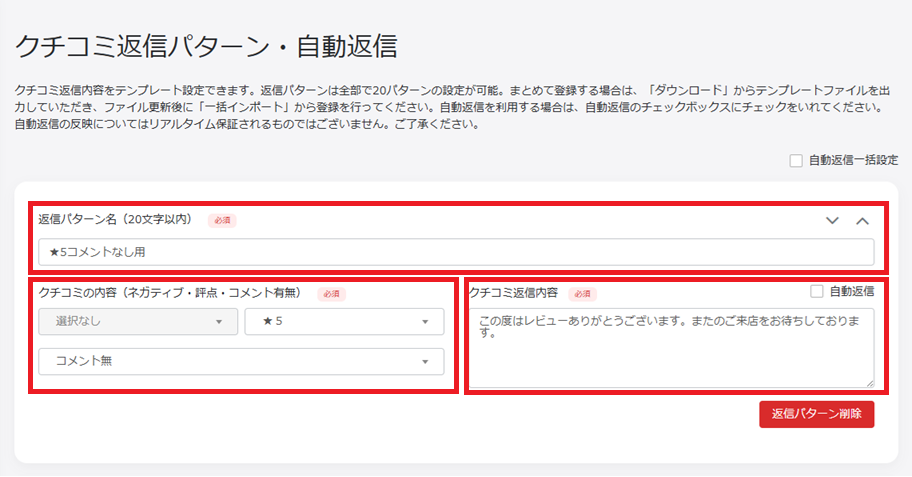
- 返信パターン名、星数、コメント有無、返信文を設定します。
- テンプレートとして使うだけなら、自動返信にはチェックを入れません。
FAQ画像: クチコミAI返信アシスタント
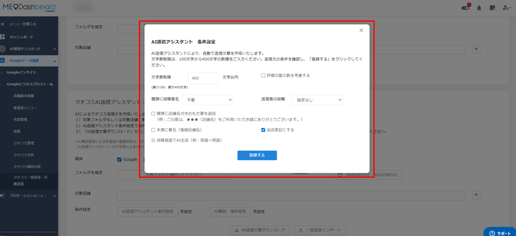
- AI返信は、星数やコメント内容をもとに返信案を作る機能です。
- 店舗にないサービス、事実と違う内容、不自然な言い回しがないか必ず確認します。
- クチコミ詳細画面でテンプレートまたはAI返信アシスタントを選びます。
- 生成された文章を読み、料理名、接客内容、店舗の言葉遣いに合わせて修正します。
- 個人名、URL、電話番号、過剰な宣伝表現が入っていないか確認します。
- 最終確認後に登録します。
FAQ画像: AI返信の条件設定
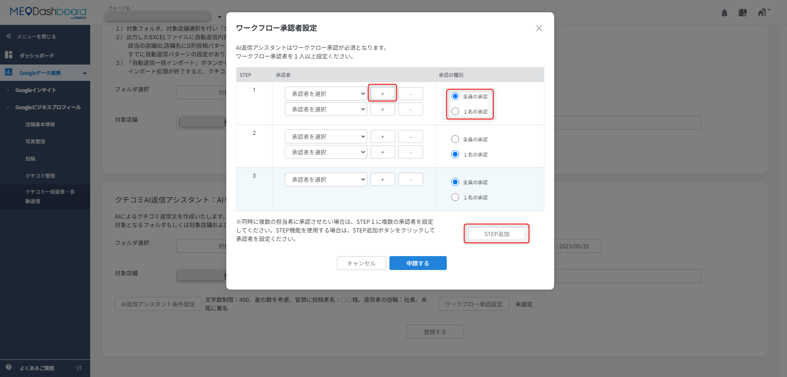
- グループ機能では、文字数、星数を考慮するか、投稿者名の呼び方、署名などを指定してAI返信を作成できます。
- 一括返信用ExcelにAI生成文が出力されるため、取り込み前に人の目で確認します。
6. 一括返信を使う
未返信が多い時は、Excelでまとめて返信文を作成し、FoodLuck MEOへ取り込む一括返信が便利です。ただし、取り込み後は複数の返信がまとめて登録されるため、Excel上で必ず内容を確認してから実行します。
| 画面 | 主な流れ | Excelで見る列 |
|---|---|---|
| 個店 | クチコミ管理からExcelをダウンロードし、未返信行へ返信文を入力して一括インポート | B-D列に投稿者名、星数、コメント。K列に返信状態。L列に返信文 |
| グループ | グループ画面のクチコミ一括返信から、フォルダ、期間、媒体を選んでExcelを作成 | B列に店舗名。I-K列に投稿者名、星数、コメント。S列に返信状態。T列に返信文 |
FAQ画像: 個店の一括返信Excel
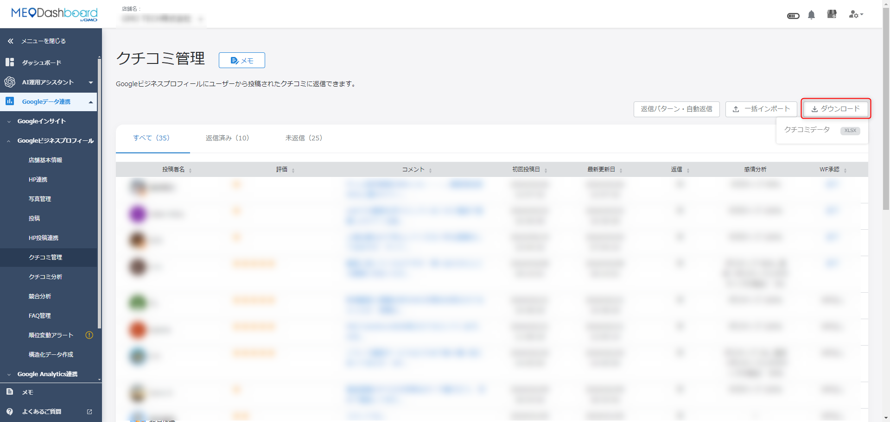
- 未返信の行に返信文を入力します。
- ワークフローを使う場合は、インポート前に承認者を指定します。
FAQ画像: グループの一括返信
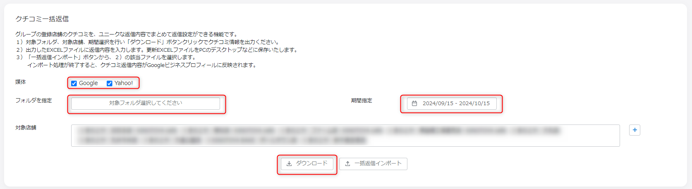
- 複数店舗をまとめて処理する場合は、グループ画面から期間と媒体を指定してExcelを作成します。
- 取り込み後、媒体側への反映には数分から時間差が出る場合があります。
| 一括返信の注意 Excelの列を削除したり、テンプレート形式を崩したりすると取り込みエラーの原因になります。不安な場合は、FoodLuck側で確認してから取り込みます。 |
|---|
7. 自動返信を設定する
自動返信は、条件に合う新しいクチコミへ自動で返信する機能です。星だけのクチコミや高評価へのお礼など、一定の条件で安定して返信したい場合に使います。
FAQ画像: 個店の自動返信設定
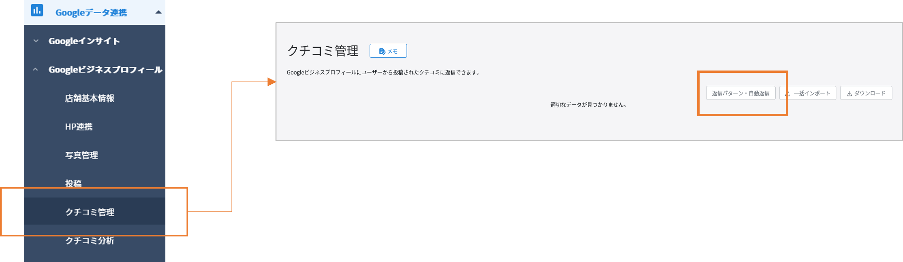
- 返信パターン名、星数、コメント有無、感情分析、返信文を設定します。
- 自動返信にチェックを入れると、テンプレートではなく自動返信として動作します。
FAQ画像: グループの自動返信Excel
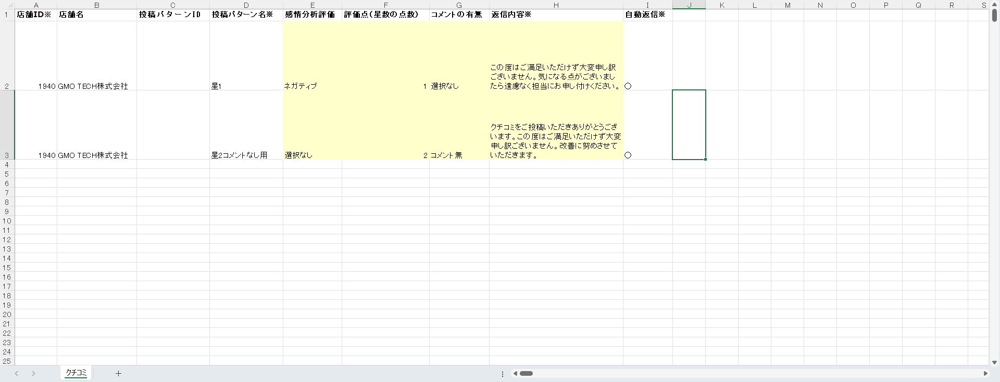
- グループでは、最新テンプレートをダウンロードし、条件と返信文をExcelで作成して取り込みます。
- 複数条件を設定する場合は行を分けます。
- 自動返信は、基本的に設定後に投稿された新しいクチコミが対象です。
- FAQでは反映タイミングとして、1日複数回の処理が案内されています。設定直後にすぐ返信されない場合があります。
- 自動返信が動かない時は、対象クチコミが設定前に投稿されたものではないか、条件に合っているかを確認します。
- グループの自動返信を削除・停止する場合は、Excelの自動返信列を停止状態にして取り込むか、個店側で該当パターンを削除します。
| FoodLuck側で確認した方がよい設定 自動返信は外部に自動で公開されるため、初回設定、複数店舗への一括設定、削除・停止、低評価への自動返信はFoodLuck側と確認してから進めるのがおすすめです。 |
|---|
8. AI翻訳を使う
インバウンドのお客様など、日本語以外のクチコミへ返信する場合はAI翻訳機能を使えます。返信作成時に言語を指定し、元の返信文と翻訳文を確認してから登録します。
FAQ画像: クチコミ返信のAI翻訳
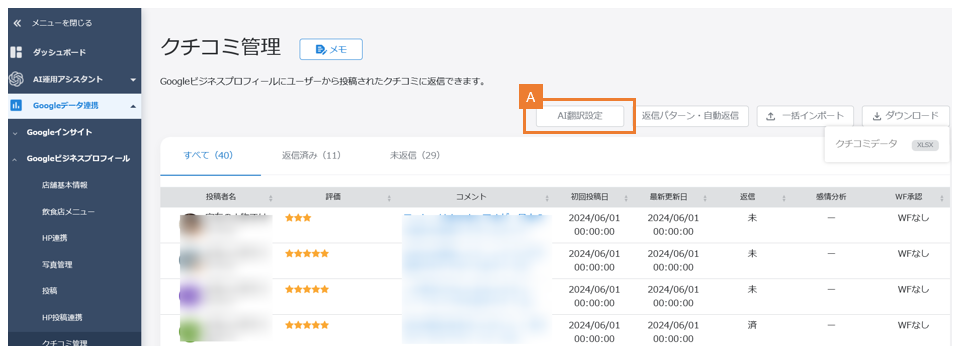
- AI翻訳設定を開き、返信言語を指定します。
- 投稿された言語でAI生成する設定も確認できます。
FAQ画像: 翻訳文の確認
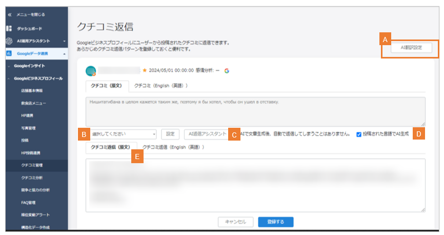
- 登録前の確認画面で、元の返信文と翻訳文を確認します。
- クチコミ本文、翻訳、返信文、返信翻訳を合わせて文字数上限に注意します。
| 翻訳返信の注意 翻訳文は便利ですが、料理名、店名、文化的な表現が意図とずれることがあります。短く、具体的で、誤解の少ない日本語を作ってから翻訳するのが安全です。 |
|---|
9. 通知、反映タイミング、表示ずれ
クチコミは投稿されてすぐFoodLuck MEOに表示されるとは限りません。Google側、FoodLuck MEO側の取得処理、返信反映の処理に時間差が出ます。
FAQ画像: クチコミ投稿通知
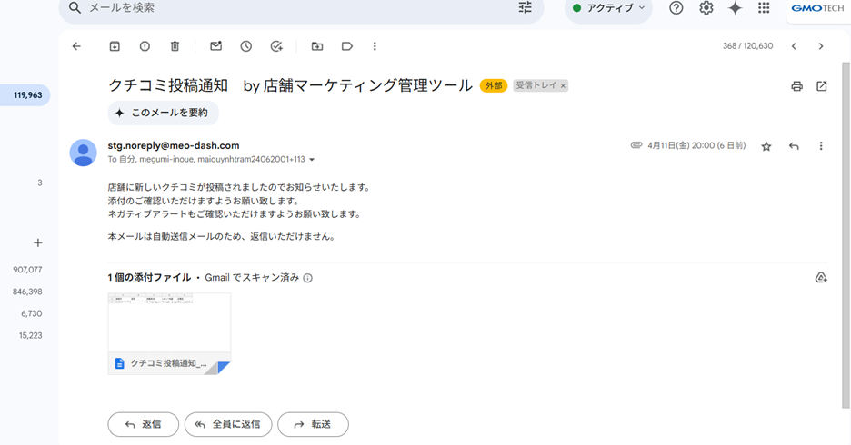
- 新しいクチコミや指定キーワードを含むクチコミが投稿された時、通知メールを受け取れます。
- メニュー横のNEWマークや警告マークで、新着や低評価通知を確認します。
| 内容 | FAQでの案内 | 店舗側の見方 |
|---|---|---|
| 新規連携直後 | 当日23:30に全クチコミ取得、翌日反映 | 初日は全件がすぐ見えない場合がある |
| 日次取得 | 5時、8時、11時、14時、17時、20時を目安に取得処理 | 投稿直後に見えなくても時間を置いて確認する |
| 全件確認 | 毎日23:30にDashboardとGBPの件数差を確認 | 件数が合わない場合の補正処理として見る |
| 月次取得 | 10日から25日の間に店舗ごとランダムで全件取得 | 過去データのずれが補正されることがある |
| 通知 | 8時、14時、20時の処理で通知 | NEWマーク、低評価アラートの表示時間に幅がある |
| Google側で直接返信を削除した場合 Googleビジネスプロフィール側で直接返信を削除すると、FoodLuck MEO上ではしばらく返信済みのまま見える場合があります。全クチコミ取得や次回同期後、Google側に返信がないことが確認されると未返信に戻ります。表示が合わない時は、まず反映タイミングと全クチコミ取得を確認します。 |
|---|
10. 削除申請と非表示・削除の見分け方
明らかな規約違反や不適切なクチコミは、Googleへ削除申請できます。ただし、削除するかどうかはGoogleの判断であり、申請しても必ず削除されるわけではありません。
- Googleビジネスプロフィールのオーナーアカウントでログインします。
- 対象店舗のクチコミ画面を開きます。
- 該当クチコミの報告アイコンをクリックします。
- 該当する理由を選び、Googleへ送信します。
- 削除されるまで時間がかかるため、申請後は様子を見ます。
FAQ画像: Googleへのクチコミ削除申請
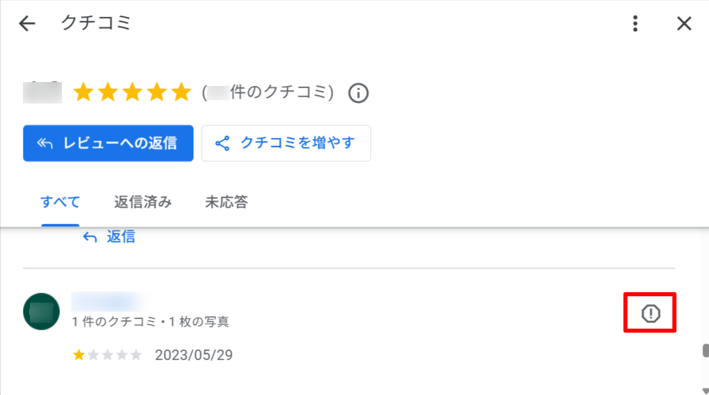
- 削除申請はGoogle側の作業です。
- 営業妨害、個人情報、スパム、無関係な内容など、Googleのポリシーに合う理由を選びます。
FAQ画像: 一時非表示と完全削除の考え方
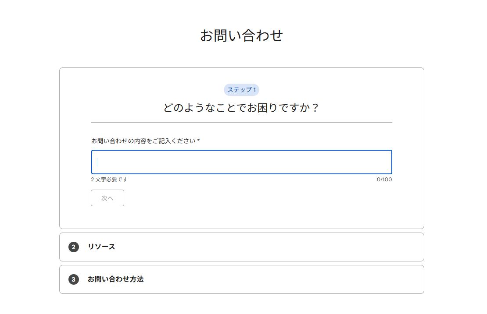
- 管理画面上のクチコミ数と、一般ユーザーに見えるGoogleマップ上の件数を比べて判断します。
- 管理画面の件数が多く公開側だけ少ない場合は、一時的な非表示の可能性があります。
| 低評価への基本対応 削除申請できる内容でなければ、冷静に返信します。まずお詫びと受け止めを伝え、事実確認、改善、再発防止の姿勢を簡潔に書きます。返信は投稿者だけでなく、未来のお客様にも読まれます。 |
|---|
11. 店舗で使うチェックリスト
□ 毎営業日または週に数回、未返信クチコミを確認した
□ 直近3ヶ月以内のクチコミから優先して返信した
□ 低評価の返信は、謝罪、共有、改善の姿勢を入れた
□ お客様のフルネーム、スタッフ個人名、電話番号、URLを返信文に入れていない
□ AI返信やテンプレートは、そのまま使わず店舗の言葉に直した
□ 一括返信Excelを取り込む前に、全返信文を読み返した
□ 自動返信の条件、対象、停止方法をFoodLuck側と確認した
□ クチコミが見えない、返信が反映されない時は、反映タイミングと全クチコミ取得を確認した
12. この資料に反映したFAQ記事
以下のFAQ記事を確認し、飲食店の現場で必要な内容を本文へ統合しました。一部の管理者向け・グループ向け機能は、FoodLuck側で確認しながら進める項目として整理しています。
| No. | FAQ記事 | 本文での反映先 |
|---|---|---|
| 1 | AI翻訳機能_クチコミ返信 | 8. AI翻訳を使う |
| 2 | AI翻訳：クチコミAI返信アシスタント | 8. AI翻訳を使う |
| 3 | Dashboardへのクチコミ反映タイミングについて | 9. 通知、反映タイミング、表示ずれ |
| 4 | GBP側で直接削除したクチコミ返信のDashboardへの反映について | 10. 削除申請と非表示・削除の見分け方 |
| 5 | Googleビジネスプロフィールのクチコミ削除申請の手順 | 10. 削除申請と非表示・削除の見分け方 |
| 6 | 【グループ】クチコミ一括返信の方法 | 6. 一括返信を使う |
| 7 | 【グループ】クチコミ自動返信の設定方法 | 7. 自動返信を設定する |
| 8 | 【グループ】クチコミ自動返信削除の方法 | 10. 削除申請と非表示・削除の見分け方 |
| 9 | 【グループ】クチコミ返信テンプレートの設定方法 | 5. テンプレートとAI返信を使う |
| 10 | 【個店】クチコミ一括返信の方法 | 6. 一括返信を使う |
| 11 | 【個店】クチコミ自動返信の設定方法 | 7. 自動返信を設定する |
| 12 | 【個店】クチコミ返信テンプレートの作成方法 | 5. テンプレートとAI返信を使う |
| 13 | 【個店】自動返信を削除する方法 | 10. 削除申請と非表示・削除の見分け方 |
| 14 | クチコミAI返信アシスタントの使用方法 | 5. テンプレートとAI返信を使う |
| 15 | クチコミAI返信アシスタント機能 β版 Powered by ChatGPT API | 5. テンプレートとAI返信を使う |
| 16 | クチコミの★（星）の数でソートを掛ける方法 | 本文全体 |
| 17 | クチコミ管理の使用方法 | 1-2. 確認画面と毎日の手順 |
| 18 | クチコミ自動返信が実行されない場合 | 7. 自動返信を設定する |
| 19 | クチコミ自動返信の反映タイミング | 9. 通知、反映タイミング、表示ずれ |
| 20 | クチコミ返信について（すべての口コミに対応すべきか） | 本文全体 |
| 21 | クチコミ返信の注意点 | 4. 返信文の作り方と注意点 |
| 22 | クチコミ返信方法 | 本文全体 |
| 23 | 一度返信したクチコミの内容の編集方法 | 本文全体 |
| 24 | 低評価のクチコミに対する返信 | 4・10. 低評価対応 |
| 25 | 書いてもらったクチコミ「一時的な非表示」か「完全な削除」かの見分け方 | 10. 削除申請と非表示・削除の見分け方 |
| 26 | クチコミ投稿通知 | 9. 通知、反映タイミング、表示ずれ |